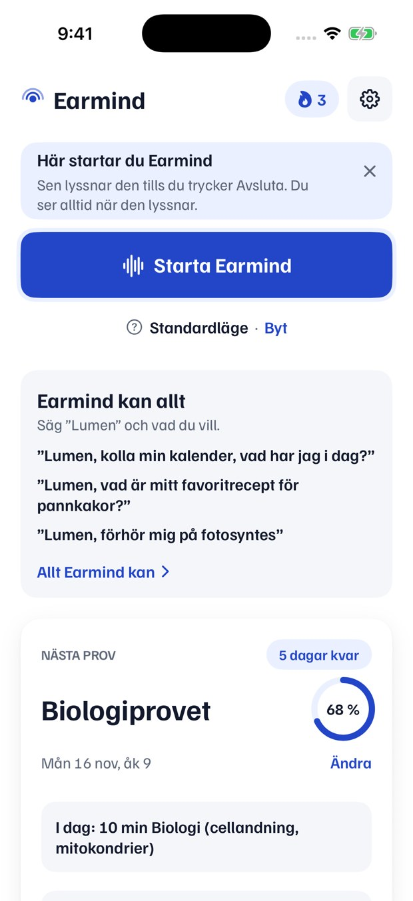

<!doctype html>
<html lang="sv">
<head>
<meta charset="utf-8">
<title>Ke22 bilder</title>
<!-- Kelly, Ke22 (2026-11-11). Varje <section class="f" id="…"> är en bild 1080 × 1920. Rendera: node docs/marketing/annonser/ke22/_src/render.js
     Säkra ytan (ADS.md 23): inget viktigt i nedersta 480 px, inom 160 px från högerkanten eller i översta 220 px. -->
<style>
  @font-face { font-family: FG; src: url("../../../../../site/fonts/familjen-grotesk.woff2") format("woff2"); font-weight: 400 700; }
  * { box-sizing: border-box; margin: 0; }
  body { font-family: FG, system-ui, sans-serif; background: #888; }
  .f { width: 1080px; height: 1920px; position: relative; overflow: hidden; }
  .safe { position: absolute; left: 0; right: 160px; top: 220px; bottom: 480px; outline: 2px dashed rgba(255,255,255,.0); }
  /* Omslag: platshållare för Gemini-bilden + hooken */
  .scene { position: absolute; inset: 0; }
  .ph { position: absolute; left: 72px; top: 170px; color: rgba(255,255,255,.55); font-size: 30px; letter-spacing: .02em; }
  .hook { position: absolute; left: 72px; right: 200px; top: 300px; color: #fff; font-weight: 700; font-size: 76px; line-height: 1.08;
          letter-spacing: -.01em; text-shadow: 0 2px 18px rgba(0,0,0,.45), 0 1px 3px rgba(0,0,0,.4); }
  .sub { position: absolute; left: 50%; transform: translateX(-50%); top: 1120px; max-width: 860px; text-align: center; }
  .sub span { display: inline; background: rgba(0,0,0,.6); color: #fff; font-size: 54px; line-height: 1.32; padding: 4px 14px; border-radius: 10px;
              box-decoration-break: clone; -webkit-box-decoration-break: clone; font-weight: 600; }
  .tag { display: inline-block; background: #2346C8; color: #fff; font-size: 34px; font-weight: 700; padding: 8px 18px; border-radius: 999px; margin-bottom: 14px; }
  .bud { position: absolute; width: 46px; height: 30px; border-radius: 16px; background: #111; box-shadow: 0 0 0 3px rgba(255,255,255,.12); }
  .k { position: absolute; left: 72px; top: 120px; color: rgba(255,255,255,.75); font-size: 30px; font-weight: 600; }
  /* Slutbild */
  .end { background: #fff; color: #141A2E; }
  .end .c { position: absolute; left: 0; right: 160px; top: 380px; display: flex; flex-direction: column; align-items: center; text-align: center; }
  .end img { width: 260px; height: 260px; border-radius: 58px; box-shadow: 0 10px 40px rgba(16,24,40,.18); }
  .end h1 { font-size: 132px; font-weight: 700; letter-spacing: -.02em; margin-top: 56px; }
  .end p { font-size: 52px; color: #5E6779; margin-top: 18px; line-height: 1.3; }
  .end .how { color: #141A2E; font-weight: 600; font-size: 46px; margin-top: 46px; max-width: 760px; }
  .end .btn { margin-top: 60px; background: #2346C8; color: #fff; font-size: 54px; font-weight: 650; padding: 30px 64px; border-radius: 30px; }
  /* Start-inklipp */
  .ins { background: linear-gradient(180deg, #EEF2FB, #DCE3F2); }
  .ins .phone { position: absolute; left: 50%; top: 250px; transform: translateX(calc(-50% - 80px)); width: 470px; border-radius: 64px; padding: 16px;
                background: #0E1118; box-shadow: 0 30px 80px rgba(16,24,40,.35); }
  .ins .phone img { width: 100%; display: block; border-radius: 50px; }
  .ins .cap { position: absolute; left: 72px; right: 232px; top: 1290px; text-align: center; font-size: 50px; font-weight: 700; color: #141A2E; line-height: 1.2; }
  .ins .note { position: absolute; left: 72px; right: 232px; top: 1420px; text-align: center; font-size: 26px; color: #5E6779; }
</style>
</head>
<body>
<div id="frames"></div>
<script>
// Omslagen: hook ur bildplan.md, en färgstämning per koncept (platshållare för Gemini-bilden).
const COVERS = [
  ['omslag-1', 'K1 Korridoren', 'Förhör i örat på vägen till lektionen', ['#2B3A55', '#0E1422'], 'Tre snabba frågor. Varför hjälper inte antibiotika mot virus?'],
  ['omslag-2', 'K2 Rizz', 'POV: du har en kompis i örat som alltid vet vad man säger', ['#4A2440', '#140A14'], 'Säg: Okej, du vinner. Du väljer nästa låt.'],
  ['omslag-3', 'K3 Fantasy', 'Varje spelhjälte har en röst i örat. Varför inte du?', ['#3A2A5E', '#0C0818'], 'Gå åt vänster. Svansen är svag.'],
  ['omslag-4', 'K4 Ingen knapp', 'Jag har inte rört telefonen på hela videon', ['#5A4632', '#1A120A'], 'Fotosyntesen är när växter använder ljusenergi för att göra socker av koldioxid och vatten.'],
  ['omslag-5', 'K5 Anime', 'Avsnitt 1: Provet om fotosyntes', ['#2A2F6E', '#08091C'], 'Vad behöver växten för att göra socker?'],
  ['omslag-6', 'K6 Elsa', 'Vi måste prata om Elsa', ['#3E4A3A', '#10140E'], 'Vad är en vakuol?'],
  ['omslag-7', 'K7 Min dag', '24 timmar med en röst i örat', ['#5C3A26', '#160C06'], 'Timer på tio minuter.'],
];
const cover = ([id, k, hook, bg, ai]) => `<section class="f" id="${id}">
  <div class="scene" style="background: radial-gradient(120% 80% at 60% 40%, ${bg[0]}, ${bg[1]})"></div>
  <div class="k">${k}</div>
  <div class="hook">${hook}</div>
  <div class="sub"><div class="tag">AI i örat</div><br><span>${ai}</span></div>
  <div class="ph">Scenbild från Gemini läggs här</div>
</section>`;
const end = `<section class="f end" id="slutbild-earmind"><div class="c">
  
  <h1>Earmind</h1>
  <p>AI i örat.<br>Fungerar med AirPods.</p>
  <div class="how">Starta Earmind en gång. Sen finns den i örat.</div>
  <div class="btn">Gratis väntelista</div>
</div></section>`;
const ins = `<section class="f ins" id="start-insert">
  <div class="phone"></div>
  <div class="cap">Starta Earmind en gång.<br>Sen finns den i örat.</div>
  <div class="note">Skärmbild från en testversion av appen</div>
</section>`;
document.getElementById('frames').innerHTML = COVERS.map(cover).join('') + ins + end;
</script>
</body>
</html>
